Rebelse Genieën
Ik had al verschillende keren met dit boek in m'n handen gestaan. Het leek me een fijn boek om te lezen, maar het was te dik (ruim vierhonderd pagina's, terwijl m'n max zo rond de tweehonderdvijftig ligt), te duur (ruim veertig euro), en er kwamen te veel mensen in voor (de eerste drie pagina's bevatten een lijst van zestien dramatis personae, en ik ben heel slecht in namen en mensen uit elkaar houden). Maar toen ik een bijzonder positieve reactie van een goede vriend van me kreeg, heb ik het toch maar aangeschaft en gelezen. En ik heb er geen spijt van.
Het boek beschrijft de intellectuele, culturele en filosofische snelkookpan die Jena aan het eind van de achttiende eeuw vormde. Als gevolg van de staatkundige opbouw van het Duitsland van die tijd, was de kleine universiteit van Jena een vrijplaats waar nieuwe ideeën min of minder zonder censuur tot bloei konden komen. Onder invloed van Schiller en Goethe (die in het twintig kilometer verder gelegen Weimar woonde), kwamen denkers als Fichte, de gebroeders Schlegel, Novalis en de gebroeders Von Humboldt in Jena wonen, werken en publiceren.
Centraal in al dit intellectuele geweld staat de uitvinding van het ik: het individu wordt in deze nieuwe filosofie tot centrum van de wereld gebombardeerd. Deze opvatting komt primair van Fichte af (onder invloed van Kant), maar is natuurlijk tevens een gevolg van de Franse Revolutie, die een paar jaar vóór de periode waarin dit boek speelt was begonnen. Vanuit deze basis vinden alle discussies plaats, worden experimenten uitgevoerd en artikelen gepubliceerd (met name in Die Horen en Athanaeum), Het was deze groep die zich verzette tegen de te ver doorgeschoten rationalisering van de Nieuwe Tijd, die de hele natuur als één groot organisme begon te zien, die zich voor het eerst 'romantici' noemden.
Wulf beschrijft niet alleen het werk van deze groep denkers, maar ook (misschien wel vooral) hun onderlinge relaties. Vanuit het centrale idee van individualiteit en vrijheid werden bestaande conventies zoals het huwelijk minder streng nageleefd dan in die tijd normaal was. Ménages à trois, affaires met studenten en medewerkers of verliefdheden op partners van vrienden waren aan de orde van de dag. Wat dit betreft lijkt de intellectuele groep in het Jena van toen wel wat op de hippie-kolonies in de jaren zestig van de vorige eeuw.
En net als in die hippie-kolonies leidde dit ook in Jena tot onvermijdelijke spanningen. De publicatie door Friedrich Schlegel van zijn liefdesleven met Dorothea Veit, bijvoorbeeld, leverde zoveel publieke verontwaardiging op dat iedereen in de Jena-kring hier last van ondervond. Of het openbare geflirt van Caroline Schlegel met de veel jongere Schelling, dat door de rest van kring met afkeuring werd bekeken. Tel hierbij op de toenemende verschillen in wijsgerige inzichten en de onverbloemde negatieve recenties van elkaars werk en je ziet dat deze hechte band na verloop van tijd wel uit elkaar móest vallen.
De snelkookpan die Jena was heeft feitelijk maar een decennium jaar bestaan – zo van 1794 tot 1806. En toen in oktober 1806 de Napoleontische legers door Jena heen trokken, was het helemaal gedaan met het kleine universiteitsstadje. Desalniettemin is de invloed van deze groep denkers niet te overschatten – invloed waar we heden ten dage nog de erfenis van ervaren. Hegel was een late toevoeging aan de Jena-kring (hij kwam in 1801 in Jena aan); Wordsworth, Coleridge, en Lord Byron werden diep geïnspireerd door de Jena-filosofie; via een gesmokkeld boek verspreide de filosofie van het ik zich over Europa – en uiteindelijk de hele wereld.
De revolutie van de geest veranderde niet alleen onze kijk op wie we zijn en wat we allemaal kunnen, maar ook op onze plaats in de wereld. We hebben het ik van fichte geïnternaliseerd, hoewel we misschien nooit de man hebben gehoord. We geloven dat we zelfbeschikkend zijn. Maar deze vrijheid brengt zowel verantwoordelijkheden als gevaren met zich mee. De vrienden in Jena worstelden ermee, net zoals wij dat vandaag de dag doen. (p.419)
Een heel fijn, goed geschreven en interessant boek. Er staat zoveel in, dat het risico bestaat te veel hiervan weer te vergeten. Om die reden ben ik begonnen met een samenvatting in de vorm van een graaf te maken (joepie, weer een projectje erbij).

Andrea Wulf: Rebelse Genieën. De eerste romantici en de uitvinding van het ik.
Vertaald uit het Engels door Fennie Steenhuis, Nannie de Nijs en Mijke van Leersum.
Oorspronkelijke titel: Magnificent Rebels. The First Romantics and the Invention of the Self.
Amsterdam:Atlas/Contact 2022
426 pagina's, gevolgd door 160 pagina's noten, literatuurlijst en een index.
Uitgelezen: 26 december 2022
À l'Aube Spirituelle de l'Humanité
Dit boekje had ik al geruime tijd in huis (als ik me niet vergis, kocht ik het ooit in Nice in 2019) en ik was er ooit al eens aan begonnen maar toen niet verder dan ongeveer de helft gekomen. Maar omdat het onderwerp superinteressant is, en omdat het goed is voor je Frans om af en toe een Franstalig boek te lezen, ben ik afgelopen najaar hier opnieuw in begonnen en heb het tussen de bedrijven door uit weten te lezen.
Marcel Otte kende ik van een artikel waar ik regelmatig aan refereer, met name wanneer het gaat over de overgang van een horizontale naar een verticale metafysica. Hij is een Belgische archeoloog annex paleoantropoloog die, volgens mij zonder het te weten, een behoorlijk wijsgerige agenda heeft; zijn onderzoek gaat namelijk over de culturele veranderingen die plaatsvonden tijdens het einde van het paleolithicum. Of eigenlijk gaat het over de vraag waaróm die culturele veranderingen plaatsvonden toen ze plaatsvonden – en waarvan we tegenwoordig zeggen dat ze het epipaleolithicum definiëren (in plaats van andersom).
Dit boekje pas in diezelfde traditie, hoewel hij hier de volledige menselijke en breder primatologische geschiedenis in ogenschouw neemt. Het werk cirkelt rondom twee centrale thema's. Allereerst de klimatologische veranderingen die ervoor zorgden dat onze verre voorouders de beboste omgeving verlieten en leerden op de steppen te overleven. De aanpassingen van het skelet, het georiënteerd zijn op wijde vlakten en de veranderingen in het dieet zorgden ervoor dat er een grotere noodzaak tot samenwerking en vooruitdenken ontstond. Al deze ontwikkelingen samen leidden tot het ontstaan van taal en de creatie van een mentaal model van zowel de nabije omgeving als de toekomst.
Het tweede centrale thema is de plasticiteit van de cultuur. Zijn observatie is dat dat fysieke omgeving van de mens niet (of nauwelijks) aanpasbaar is, en ook zijn biologische opbouw staat redelijk vast. Toch is het de mens gelukt om zich in alle uithoeken van de aarde te vestigen. Dit kan doordat de cultuur als het ware een interface vormt tussen de biologische gesteldheid en de fysieke gegevenheid:
Tous les environments traversés et conquis durant ces quelques millions d'années par l'homme attestent de cette puissance adaptive, basculée uniquement du côte culturelle. (p.89)
Otte schrijft fraai, op een onderhoudende en informatieve wijze, en is (vanzelfsprekend) goed op de hoogte van de stand van zaken van zijn vakgebied. Wel heeft hij soms de neiging om in herhaling te vervallen, of juist in te gedetailleerde beschrijving van tijdperken (met name in hoofdstuk 8, Défier la nature, dat met 28 pagina's – op een gemiddelde van 16 – ook verreweg het langst is).
Het is jammer dat Otte de wijsgerige traditie die zich eigenlijk met hetzelfde bezighoudt onvoldoende kent: te vaak schreef ik de naam van een denker of zelfs een hele wijsgerige denkrichting in de kantlijn. Het zou werkelijk interessant zijn om deze twee vakgebieden dichter bij elkaar te brengen.
Al met al is dit een zeer lezenswaardig en informatief boekje waar ik ongetwijfeld nog dikwijls op zal teruggrijpen. Het is voorzien van goede en ter zake doende illustraties en een redelijke literatuurlijst (die overigens niet volledig is). Zoals blijkbaar gebruikelijk in Franstalige wetenschappelijke literatuur ontbreekt een goede index, maar in dit geval is dat iets minder irritant dan normaliter.
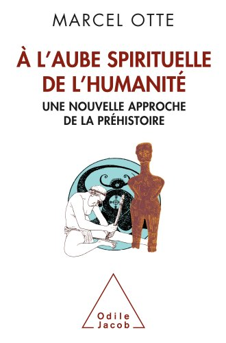
Marcel Otte: À l'Aube Spirituelle de l'humanité. Une Nouveau Approche de la Préhistoire.
Paris:Odile Jacob, 2012
180 pagina's
Uitgelezen:4 december 2022
Het Gebroken Huis
Als verfent luisteraar van VPRO's OVT ben ik altijd bang voor het onderdeel 'historische boeken', omdat daarin vaak te veel boeken die ik zelf zou willen lezen worden besproken. Meestal weet ik me gelukkig in te houden, maar toen Nadia Bouras op 19 november Het Gebroken Huis van Horst Krüger besprak, wilde ik dit toch wel graag lezen: dit beloofde een interessant persoonlijk inkijkje te geven in een jeugd ten tijde van de opkomst van het Nationaal Socialisme.
We lezen hoe de schrijver, Horst Krüger, zijn jeugd in Eichkamp, een onbeduidende wijk net buiten Berlijn, ervaart. Zijn vader was hoge ambtenaar en zijn moeder vooral huisvrouw. Er gebeurt in de vroege jeugd feitelijk niet zo veel in het Eichkampt – volgens Krüger waren de eerste vijftien jaar van zijn leven als één dag. En zoals deze familie van petite bourgouise waren er in het Duitsland van 1933 miljoenen, die ondanks alles ontvankelijk waren voor de belofte van het nationaal socialisme. De saaiheid van alledag wordt eigenlijk pas verbroken wanneer Krügers zus zelfmoord pleegt. Haar dood, dixit Krüger, brengt eindelijk leven in het huis.
Tegen deze achtergrond vertelt de auteur ons zijn ervaringen vóór, tijdens en net na de Tweede Wereldoorlog. De zes hoofdstukken die het boek kent zijn eigenlijk zes verschillende verhalen: er is geen verhaalopbouw of -ontwikkeling. We lezen over het leven in Eichkamp, de zelfmoord van zijn zuster, zijn vriendschap met een latere verzetsstrijder, zijn arrestatie en detentie, het einde van de oorlog en de tribunalen na de oorlog.
De hoofdstukken kennen elk een eigen stijl; soms verhalend, soms reflectief en ook wel een beetje nouveau vague. Hoewel het perspectief altijd de eerste persoon is, lopen de tijden wel wat door elkaar – soms zelfs binnen één zin. Dit geeft het boek een soort van actuele, verhalende sfeer.
Een voor mij fraaie passage is die wanneer Krüger (met een mede-soldaat) net is overgelopen naar de Amerikanen. Verbazingwekkend genoeg kan hij daar Duits spreken, omdat er een vertaler, ene Mr. Levinson, aanwezig is die in Heidelberg heeft gestudeerd. Dit levert een scene op die in Catch-22 niet zou misstaan:
Toen volgde een lang gesprek tussen Mr Levinson en mij. Dat zal ik mijn leven lang niet vergeten, een klein colloquium op paasmaandag 1945 om zeven uur 's ochtends. Hij zei Heidelberg en ik zei Freiburg. Hij zei Jaspers en ik zei Heidegger. [...] Hij hield van Duitsland, was dolgelukkig dat hij een vakgenoot tussen al deze mensen in uniform had aangetroffen en nu voerden we met zijn tweeën een lange discussie over Heidegger en Jaspers. De analuse van het Dasein kwam ter sprake, de musiek van het Sein en het verschil tussen Sein en Seiende, er kwamen meldingen van het front tussendoor. (p.185).
Al met al een fijn en lezenswaardig boekje, maar het maakte de belofte die Nadia Bouras gaf niet helemaal waar. Je zou willen weten hoe het was om als jongeling in nazi-Duitsland op te groeien, hoe het kwam dat Krügers ouders – en miljoenen als hen – voor het nationaal socialisme kozen, en wat de aantrekkingskracht van de belofte van Hitler is geweest. Dat komt in het werk eigenlijk niet naar voren. Het huis gaat van binnenuit stuk, maar de bredere maatschappelijke context blijft wat mij betreft onderbelicht.
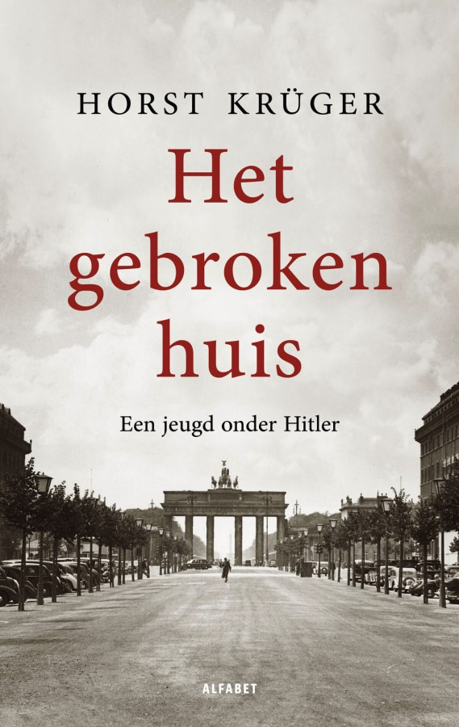
Horst Krüger: Het Gebroken Huis. Een jeugd onder Hitler
Amsterdam: Alfabet uitgevers, 2022
Oorspronkelijke titel: das Zerbrochene Haus. Ein Jugend in Deutschland. (1966)
Vertaald door Liesbeth van Nes.
253 pagina's
Uitgelezen: 29 november 2022
Im Westen nichts Neues
Omdat Netflix een nieuwe verfilming van deze klassieker heeft gemaakt, had ik ineens de geest om het werk weer eens te herlezen. Ik weet niet hoe vaak ik dit boekje heb gelezen (ik kocht het blijkbaar in 1996), maar de laatste keer is toch zeker tien jaar geleden. Ik moest het boek ook even zoeken, want na de laatste verhuizing waren de romans wat over verschillende kasten in verschillende kamers verspreid geraakt.
Natuurlijk wist ik de grote lijnen van het verhaal nog wel. Paul Bäumer die met een groep kameraden in en rondom de loopgraven de laatste anderhalf, twee jaar van de eerste wereldoorlog meemaakt en verslag doet van zijn ervaringen. De ganzen die ze op een nacht soldaat maken, de vooruitgeschoven post om prikkeldraad te vernieuwen, de Franse dames waar ze uiteindelijk contact mee hebben, het uiteindelijk sneuvelen van zijn beste maat... Maar veel details was ik ook vergeten: het Russische krijgsgevangenenkamp, de wandeling door het ochtendgloren of de hitte van de zomer van 1918.
Vreemd genoeg was er een aantal scènes die me nog goed voor de geest stonden, maar die nu een diepere indruk op me maakten dan eerder. Zoals wanneer Bäumer op patrouille de weg kwijt raakt en de nacht en een dag in een granaattrechter moet doorbrengen. Het verslag van het handgemeen tussen hem en de Fransman die in dezelfde trechter valt, raakte me werkelijk intens – terwijl ik me de scène nog wel kon herinneren.
Of deze prachtige beschrijving van zijn ervaring van de tank, helemaal aan het eind van het boek:
Diese Tanks sind Maschinen, ihre Kettenbänder laufen endlos wie der Krieg, sie sind die Vernichtung, wenn sie fühllos in Trichter hineinrollen und wieder hochklettern, unaufhaltsam, eine Flotte brüllender, rauchspreiender Panzer, unverwundbare, Tote un Verwundete zerquetschende Stahltiere – Wir schrumpfen zusammen vor ihnen in unserer dünnen Haut, vor ihrer kolossalen Wucht werden unsere Arme zu Strohhalmen und unsere Handgranaten zu Streichhölzer. (p.252)
Ik had echter ook de omgekeerde ervaring. Zo is er een scène waarin Bäumer zijn kamer in het ouderlijk huis bezoekt en waarin hij merkt dat zijn bed, zijn bureau en zijn boeken niet meer tot hem spreken. Ik weet nog dat ik dit eerder een heel indrukwekkend stuk tekst vond, maar nu was het dat een stuk minder.
Al met al fijn om dit werk weer eens ter hand te nemen – alsof je een oude goede vriend tegenkomt die je lang niet hebt gezien. En sowieso is het bijzonder dat een boek dat bijna honderd jaar oud is nog zo tot de verbeelding kan spelen.
Persoonlijk vind ik Der Weg Zurück denk ik indrukwekkender, maar dat is minder bekend en minder geschikt om te verfilmen, denk ik.
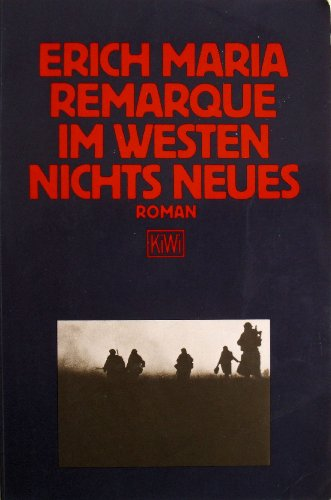
Erich Maria Remarque: Im Westen nichts Neues
Köln:Kiwi Verlag, 15. Auflage, 1996 [1928]
263 pagina's
Uitgelezen: 11 november 2022
Het internet is stuk
Dit boekje kreeg ik van mijn echtgenote omdat al m'n andere boeken op waren en ik toch iets moest lezen terwijl ik met Covid op de bank lag. Ik had er al eens iets over gelezen, en Marleen Stikker ken ik wel een beetje van mijn tijd aan het HKU, toen ik nog wel eens bij Waag en Mediametic over de vloer kwam.
Het boek heeft drie delen. In het eerste deel beschrijft Stikker de Nederlandse ontwikkeling van internet begin jaren tachtig, waar ze via De Digitale Stad een belangrijke rol in heeft gespeeld. Leuk en interessant om te lezen, met name omdat ik in dezelfde tijd mijn eerste schreden op het wereldwijde web zette – veel herkennig, kortom. Het tweede deel beschrijft het het internet zoals het er vandaag de dag uitziet (het kapotte uit de subtitel). Hierin beschrijft ze de bekende problemen met betrekking tot de sociale media, het verdienmodel en de surveillance-samenleving. In het derde deel komt ze met ideeën over hoe deze problemen geadresseerd of opgelost zouden kunnen worden.
Hoewel het een leuk en interessant boekje is, is de informatiedichtheid wel erg laag – het had ook met een kwart van de pagina's toegekund. Het lijkt er een beetje op dat Sikkens geen likes spaart, maar namen van mensen met wie ze heeft samengewerkt. Zoals gebruikelijk wanneer ik een boekje ga lezen waar geen index bij zit, heb ik dat ook met dit boekje gedaan; maar op een gegeven moment ben ik opgehouden met alle namen bij te houden – het waren er gewoon te veel. Vooral in het eerste deel staan er op elke pagina wel een aantal personen met naam en toenaam genoemd.
De problemen die Sikkens adresseert zijn werkelijk en belangrijk, maar behelzen niet alleen het internet maar zo ongeveer de hele moderne maatschappij (waarin internet natuurlijk een belangrijke rol speelt, maar niet de enige). Het is ook niet zo dat deze problemen voor het eerst door haar worden geïdentificeerd (ze refereert zelf ook aan het onleesbare boek van Zuboff, maar op veel andere plaatsen worden dezelfde problemen benoemd), maar goed, dat suggereert ze ook niet echt. Het grootste probleem heb ik met haar oplossingen. Die zijn wel érg idealistisch en komen wel érg uit de bekende politieke hoek.
Zo wil ze Facebook en vergelijkbare sites vervangen door een systeem als Mastodon: een federatief netwerk, waarbij je zelf kunt kiezen bij welke site je lid wilt worden (p.230). Zo zou je je bijvoorbeeld moeten kunnen aanmelden via mastodon.waag.org, maar het probleem is dat deze site alweer uit de lucht is. En dat geeft direct het probleem aan met deze en vergelijkbare ideeën en oplossingen: allemaal mooie en idealistische ideeën, maar op het gebied van onderhoud en duurzaamheid (in de zin van durability) gaat het allemaal niet werken. In de jaren negentig dachten we nog dat iedereen z'n eigen server zou gaan opzetten en beheren; het probleem is dat niemand dat wil (een enkele uitzondering daargelaten, uiteraard).
Of wat te denken van haar suggestie om TCP/IP te vervangen door, bijvoorbeeld, SCION? Ook weer een mooi en lovenswaardig initiatief, maar een marginaal verschijnsel. Die marginaliteit wordt duidelijk wanneer je bijvoorbeeld op Stackoverflow zoekt op TCP/IP en wanneer je zoekt op SCION: 46.000 resultaten versus 184. Het werkelijke probleem, dat door Stikker niet wordt geïdentificeerd, is dat we niet from scratch opnieuw kunnen beginnen en dat de problemen veel meer sociaal dan technologisch van aard zijn.
Maar goed, ik heb het boekje uiteindelijk vrij snel en met plezier gelezen. Behalve veel namen staan er ook veel voorbeelden van kunstwerken en experimenten in, die op zichzelf al de moeite van het verder bekijken waar zijn.
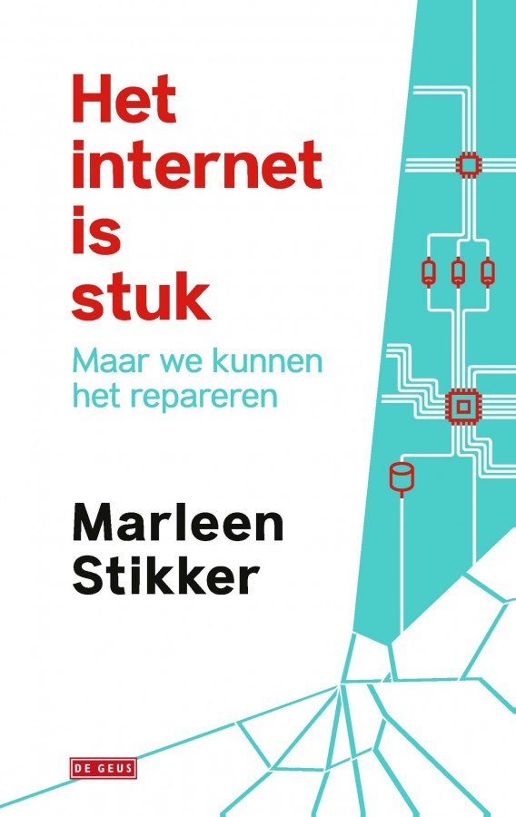
Marleen Stikker: Het Internet is stuk, maar we kunnen het repareren.
Amsterdam:De Geus, 2019
249 pagina's.
Uitgelezen: 19 oktober 2022
Crisis!
De vraag roept zich een beetje op of het nuttig is om van álles wat ik uitlees hier een kort verslagje van te schrijven. Dat komt doordat ik afgelopen week (geveld door Covid) het essay 'Crisis!' van Beatrice de Graaf las. Met veel plezier, maar met z'n vijfenvijftig pagina's is meer een uitgebreid artikel dan echt een boekje. Maar soit, het was interessant en boeiend genoeg, dus vooruit maar.
Crisis! is geschreven in het kader van de maand van de geschiedenis, dat dit jaar 'wat een ramp!' als thema had. Begrijpelijk, want het is natuurlijk 350 jaar na 1672. Volgens De Graaf is de Leidse buskruitramp uit 1807 de eerste echt nationale crisis. Daarvoor waren er natuurlijk wel rampen en crises, maar mensen die dat betrof zagen dat toch meer als een goddelijke noodzaak en waren ook meer op zichzelf aangewezen.
Er was geen systeem van rampenbestrijding of preventieve gezondheidszorg. Er werd pas actie ondernomen als de epidemie was gesignaleerd. Ziektes en rampen werden gezien als schikking van het lot, als hand van God (p.13).
Pas met de buskruitramp was dit voor het eerst anders. Er werden landelijke inzamelingsacties gehouden, pamfletten en vlugschriften geschreven, en de 'belichaming van de natie' koning Lodewijk Napoleon kwam op bezoek.
Dit bleek een opmaat te zijn voor een ontwikkeling die zich gedurende de volgende anderhalve eeuw voltrok. De angst voor revolte in 1848, het palingoproer, of de dreiging van het bolsjevisme of fascisme in de jaren dertig... Allemaal voorbeelden waar de overheid zich steeds meer met het dagelijks leven van de burgers begon te bemoeien.
Want als iets duidelijk wordt uit dit boekje is het wel dit: dat er in de voorbije twee eeuwen een verschuiving is waar te nemen in de manier waarop men de overheid beschouwd. Waar deze eerst als beschermer en regelaar werd gezien, wordt de overheid heden ten dage eerder als veroorzaker van crises beschouwd. Dit verschil wordt door De Graaf geïllustreerd aan de hand van enerzijds de watersnoodramp van 1953 en anderzijds de Bijlmerramp in 1992.
[De Watersnoodramp] groef zich als nationaal trauma in het publieke geheugen in. In tegenstelling tot eerdergenoemde bestuurscrises en ordeverstoringen bracht deze ramp geen polrisatie maar eensgezindheid teweeg (p.25)
De [parlementaire enquête naar de Bijlmerramp] kan als het triggermoment in de ontwikkeling van een nieuw crisisbesef worden beschouw: een besef waarbij de overheid niet als redder, maar de burger als gedupeerde, als eiser en als klager vooropstaat. De overheid wordt gewogen – en te licht bevonden (pp.35-36).
Crisis! is een interessant en leesbaar boekje. Het biedt een historisch overzicht van gebeurtenissen die op zich niks met elkaar te maken hebben, maar die gezamenlijk wel de onvoorspelbaarheid van het menselijk leven laten zien. Het geeft ook een aardige historische inkijk in de ontwikkeling van de huidige gepolariseerde maatschappij, waarbij de burger zichzelf steeds meer centraal is gaan zetten en het collective belang ondergeschikt wordt gemaakt aan individuele grillen.
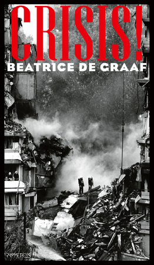
Beatrice de Graaf: Crisis!
Amsterdam:Prometeus, 2022
55 pagina's, plus nog 9 pagina's eindnoten.
Uitgelezen: 16 oktober 2022
Het geval Wagner
In mijn jonge jaren dweepte ik wat met Wagner (nog steeds wel, eigenlijk). In mijn iets minder jongere jaren dweepte ik met Nietzsche (nog steeds wel, eigenlijk). Dus de vraag wat er zich nu had voorgedaan tussen die twee heeft me altijd geboeid.
Afgelopen zomer ben ik daarom eens begonnen met een samenvatting te maken van Der Fall Wagner (KSA 6, pp.10-53). En eerlijk gezegd, hoewel ik natuurlijk genoeg Nietzsche verteerd heb, kwam ik er niet uit. De aforismen, het gebruik van metaforen zonder duidelijke uitleg, de vele onafgeronde zinnen... Het werd me niet duidelijk. Wat had Nietzsche nu eigenlijk tegen Wagner en diens opera's? Was het de massaliteit? Het theatrale aspect? Het verlossende? Wat te denken, bijvoorbeeld, van het volgende:
Grundsatz: die Melodie ist unmoralisch. Beweis: Palestrina. Nutzanwendun: Parsifal. Der Mangel an Melodie heiligt selbst... (p.25)
Dus toen al mijn boeken op waren en ik in de boekhandel voor weinig geld de Nederlandse vertaling van dit werk vond, leek me dat een goed moment om deze studie nieuw leven in te blazen. Wellicht dat het Nederlands wat duidelijker was. Daarbij kwam dat ik door covid geveld geforceerd was thuis te blijven en te veel energie had om niks te doen.
Maar ook hier kwam ik bedrogen uit. Gelukkig is mijn Duits blijkbaar goed genoeg dat dát niet de beperkende factor was. Ook de Nederlandse vertaling hielp me niet om alles helder te krijgen. Wat wel een beetje hielp was dat in dit boekje ook een vertaling van Nietzsche contra Wagner was opgenomen, dat ik in mijn eerdere poging links had laten liggen. Deze tekst komt chronologisch vóór Der Fall Wagner maar is door Nietzsche pas later (en zelfs na vele bedenkingen) gepubliceerd. Hier worden zijn bedenken tegen het wagneriaanse project iets helderder toegelicht.
Blijkbaar ging het inderdaad om het theatrale en het massale aspect van Wagner. Volgens Nietzsche doet het theater geen recht aan het leven zelf – het is een kunstvorm die per definitie een masker draagt, het werkelijke leven een loer draait en louter uit is op effectbejag. De nadruk op effect, de massaliteit en het spelen van een rol: daar ligt wel een aardige parallel met de hedendaagse samenleving, waarin hele volksstammen hun hele hebben en houden online gooiden...
Ik ben van nature antitheater; diep in mijn hart koester ik dezelfde intense hoon jegens het theater – deze massakunst per excellence – die elke kunstenaar heden ten dage koestert. (p.65)
Maar wat eigenlijk het meest informatief in dit boekje was, was het nawoord (van Hans Driessen, die bijvoorbeeld ook Sloterdijk heeft vertaald) en de tijdslijn. Het is blijkbaar niet zo vreemd dat ik louter op basis van Der Fall Wagner niet heel eenvoudig kon achterhalen wat het probleem van Nietzsche met Wagner is geweest, want er gaan vele tientallen jaren van intensieve correspondentie en wederzijdse bezoeken aan vooraf. Natuurlijk wist ik wel van de initiële vriendschap en later breuk tussen deze twee, maar ik verkeerde in de veronderstelling dat Der Fall Wagner een waterscheiding was, terwijl het dus meer een culminatie en samenvatting was van een al veel langer lopende ontwikkeling. Het onderwerp vergt dus veel meer studie dan alleen dit ene werk.
Driesen vat het conflict kort en bondig samen:
[Nietzsche's] belangrijkste kritiek is, dat Wagner zich met zijn kunst in de rijen van de Europese decadenten heeft geschaard. [...] Wat [Wagner] op de planken brengt, zijn de problemen van hysterici, die in de hun levensmoeheid op zoek zijn naar steeds verfijndere prikkels, die zwelgen in gevoelens en zich verliezen in grote gebaren. Alles wat Wagner aanraakt, wordt ziek.
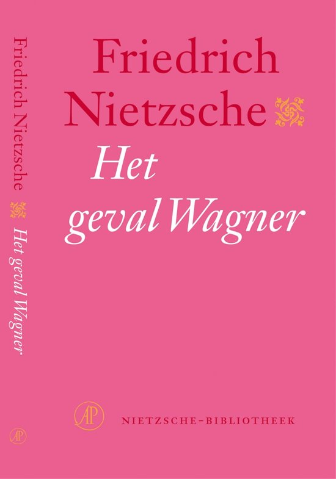
Friedrich Nietzsch: Het geval Wagner
Vertaald en van een nawoord voorzien door Hans Driessen
Amsterdam:De Arbeiderspers, 1994
119 pagina's
Uitgelezen: 14 oktober 2022
De Vrouw die Friesland Redde
Als iemand die geïnteresseerd is in het koningshuis, en iemand die een tijd lang in Friesland heeft gewoon, was het onvermijdelijk dat ik dit boekje kocht nadat ik erover in Trouw had gelezen. Het boek vertelt de levenswandel van Albertine Agnes, kleindochter van Willem van Oranje, de vijfde dochter van stadhouder Frederik Hendrik. Zij trouwt in 1652 met de eenentwintig jaar oudere Willem Frederik van Nassau-Dietz, stadhouder van Friesland, Groningen en Drenthe. Uit dit huwelijk komen drie kinderen, waarvan de oudste zoon, Hendrik Casimir, uiteindelijk via erfopvolging de stadhouder van Friesland werd.
De man van Albertine Agnes, Willem Frederik, komt in 1664 door een bizar ongeluk om het leven. Tijdens het schoonmaken van zijn pistool kijkt hij in de loop wanneer het pistool plotseling afgaat. Een deel van zijn gezicht wordt weggeschoten en na drie dagen overlijd hij. Vanaf dat moment opereert Albertine Agnes als voogdes van Casimir. Dat blijkt ook nodig, want in diezelfde tijd wordt de Republiek van het westen, het zuiden, en het oosten bedreigd: dit is de tijd van het beroemde rampjaar 1672.
Samen met generaal Hans Willem van Aylva (de Ontzaggelijke) maanden ze de Staten van Friesland aan om de waterlinie op orde te krijgen, meer weerbare mannen te mobiliseren en orde en tucht in het Friese leger te bewerktstelligen. De organisatie van de Friese Staten was toentertijd zo ingewikkeld, dat er uiteindelijk niets besloten kon worden. Er dreigde zelfs enige tijd een burgeroorlog, toen er twee Staten van Friesland waren: één in Leeuwarden en één in Sneek.
Albertine Agnes laveerde de hele tijd rondom dit politieke wespennest. Haar doel was de toekomst van het huis van Oranje-Dietz veiligstellen en ervoor zorgen dat haar kinderen en kleinkinderen door erfopvolging Stadhouder zouden kunnen blijven. Hoewel ze formeel geen enkele zeggenschap of mandaat had, regeerde ze autonoom en wist ze uiteindelijk alle fracties weer bijeen te krijgen.
Het grote verhaal was mij volledig onbekend, dus alleen daarom was het boek al het lezen waard. Maar ook de details die hierin naar voren komen zijn bijzonder interessant. Zo wordt de bestuurlijke organisatie van Friesland uit de doeken gedaan, wordt er beschreven hoe Drenthe nooit echt een gewest is gewees, en wordt duidelijk gemaakt hoe de verhouding tussen Von Rapenhaupt en Aylva zorgde voor spanningen tussen Groningen en Friesland. En dit alles tegen de achtergrond van de continue dreiging vanuit alle windstreken.
Jansen heeft een vlotte pen, maar heeft tevens de neiging wat in herhaling te vallen. Zo wordt bijvoorbeeld het fenomeen van kuiperijen op verschillende plaatsen toegelicht of passeert de Friese waterlinie meerdere keren de revue. Ook heeft ze de neiging om namen te blijven gebruiken, waar een persoonlijk voornaamwoord beter zou zijn geweest - zo zijn er alineas waarin 'Albertine Agnes' meerdere keren voorkomt. Hierdoor komt de tekst soms wat 'staccato' over. Ook de geringe lengte van de hoofdstukken (gemiddeld 5,5 pagina's per hoofdstuk) draagt hier aan bij.
Een groot nadeel van het boek, maar dat kun je Jansen niet verwijten, is dat alle belangrijke personen min of meer hetzelfde heten. Iedereen heeft Casimir Willem of Frederik Hendrik of Frederik Willem of Maurits of ... Het ware hierom beter geweest om een overzichtje toe te voegen met de belangrijkste personen en hun onderlinge verhoudingen. Dat moet ik dan zelf maar weer maken.
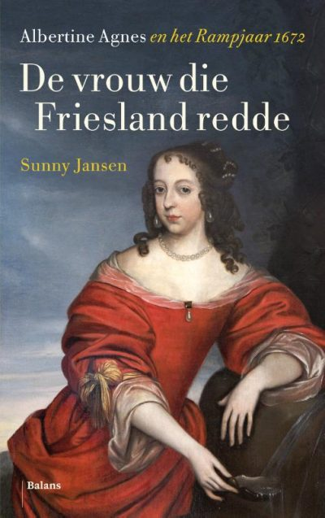
Sunny Jansen: De Vrouw die Friesland Redde. Albertine Agnes en het Rampjaar 1672
Uitgever Balans:2022
280 pagina's, plus nog 40 pagina's literatuur, noten en index.
Uitgelezen: 3 oktober 2022
The Internet Is Not What You Think It Is
Een nadeel van een abonnement op De Groene Amsterdammer, behalve dat je dan wekelijks nóg meer hebt om te lezen, is dat je het risico loopt om op interessante titels geattendeerd te worden. Dat gold zeker toen ik het interview met Justin Smith over zijn boek The Internet Is Not What You Think It Is las. Vanuit zowel mijn interesse als mijn professie was dit een boekje dat veel interessante en vernieuwende inzichten beloofde, dus ik bestelde het direct (bij Van der Velde – als het even kan prefereer ik dat boven bol.com).
Smith stelt zeker niet teleur (of het moet zijn dat hij in het Engels schrijft in plaats van in het Frans, terwijl hij toch werkzaam is in Parijs). In het boekje breekt hij een lans voor de gedachte dat het internet helemaal niet zo'n radicaal nieuwe ontwikkeling is als menigeen denkt dat het is. Hij traceert het idee van communicatie op afstand tot in de verre geschiedenis van de menselijke soort, waarbij hij vergelijkingen maakt met de ontwikkeling van de drukpers, de semafoor en de telegraaf. In die zin lijkt het boekje een beetje op Une Histoire de la Communication Moderne van Patrice Flichy.
Maar het werk is veel meer dan een eenvoudig historisch overzicht van communicatie. Smith maakt interessante vergelijkingen tussen hoe communicatie op afstand bij niet-menselijke dieren plaatvindt, en zet onze eigen pogingen daarmee in een radicaal niet daglicht. Zoals spinnen webben weven of bomen hun wortels verbinden, zo zijn ook wij van oudsher bezig met het maken van verbindingen – via handelsroutes, familielijnen of berichten. En dit alles gelardeerd met wijsgerige inzichten van Kant en met name Leibniz: de filosoof die het meest fundamenteel heeft nagedacht over de verhouding tussen het mechanische en artificiële en het biologische en mentale.
Werkelijk fascinerend is zijn beschrijving van de parallele ontwikkeling van het automatische weefgetouw van Jacquard en de analytical engine van Babbage en Lady Lovelace (die, wat ik niet wist, de dochter was van Lord Byron). Een verhaal dat ik wel al kende maar nog niet zo duidelijk en overzichtelijk beschreven heb gezien.
Het idee, de oude droom van globale instantane communicatie lijkt met de huidige technologie min of meer verwezenlijkt te zijn. Maar, en dat is de 'warning' uit de titel van het boek, deze utopie is heden ten dage omgeslagen in een dystopie; om zeep geholpen door de realiteit van superrijke (en dus invloedrijke) bedrijven (de GAFA's van deze wereld), de globale informatie-economie, en de attention-destroying nature van de netwerktechnologie.
[The] main economy is now driven not by our labor in any established sense, but by our data. This is a revolution at least as massive as the agricultural and industrial revolutions that precede it. Whatever else happens, it is safe to say that for the rest of all of our lifetimes, we will only be living out the initial turbulence of this entry into a new historical epoch. (p.15)
Een heel fijn boekje om te lezen (ik las het in een week uit) met veel prikkelende en interessante ideeën. Als je er iets negatiefs over wilt zeggen, moet het zijn dat het een beetje all over the place is. Zonder de illusie volledig te zijn, staan hieronder bijvoorbeeld de onderwerpen die Smith in het werk adresseert:
- vier dingen die werkelijk nieuw zijn aan de huidige tijd (pp. 15-20)
- wijsgerig/psycholosche analyse van attention (aandacht) (pp. 20-34)
- verschil tussen klassieke en populaire muziek (pp. 47-49)
- telecommunicatie in het dierenrijk en het wood wide web (pp. 58-73)
- Ontwikkeling van technologie (pp. 80-84)
- intentionaliteit (pp. 85-99)
- de historische ontwikkeling van de rekenmachine en de computer (pp. 103-121)
- side-note over China (pp. 108-109)
- de verhouding tussen het automatische weefgetouw en de machine van Lovelace (pp. 125-139)
- metaforen en cybernetica (pp. 140-149)
- de mogelijkheid die internet biedt om alles vanuit je eenzame kamer in te zien (pp. 158-173)
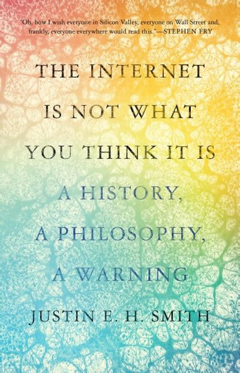
Justin E.H. Smith: The Internet is not what you think it is. A history, a philosophy, a warning.
Princeton UP:2022
174 pagina's, plus nog 19 pagina's noten, literatuur en index
Uitgelezen: 21 september 2022
Fenomenologia della fine
Ik weet niet exact meer hoe ik bij dit boekje kwam. Ik meen dat ik er een keer op werd geattendeerd via twitter, maar ik kon de exacte bron niet meer terughalen. Hoe dan ook, toen mijn broer in zijn nieuwe woonplaats Turijn verbleef, appte ik hem dat ik hierin geïnteresseerd was; en omdat een goed verstaander aan een half woord genoeg heeft, had ik het een paar weken later in mijn bezit.
Ik ken Franco Berardi (ook wel bekend onder zijn pseudoniem Bifo) van de bundel Tecnologia, Communcazione, Democrazia die ik een paar jaar geleden heb gelezen. Bifo is een Italiaanse schrijver en denker die zich behoorlijk aan de linkerkant van het politieke spectrum bevindt. Zo heeft hij het regematig over de klassenstrijd en is hij ook verschillende keren opgepakt omdat hij die strijd zou hebben aangewakkerd. Hoewel hij inmiddels iets gematigder is in zijn opvattingen (zo heeft hij afstand genomen van het gedachtegoed van Lenin), blijft hij toch staatskritisch en gericht op individuele vrijheid en persoonlijke menselijke capaciteiten.
Fenomenolgia della fine bestaat eigenlijk uit twee boeken. Het eerst stuk is een dagboek dat hij aan het begin van de pandemie in Italië heeft geschreven, het tweede deel behelst zes meditaties over drempels (Meditationi sulle soglia). Uit het dagboek blijkt dat Bifo zowel optimistisch als pessimistisch is. Het lijkt erop dat hij verkondigt dat de pandemie een waterscheiding in de menselijke geschiedenis gaat worden. Dit is het fenomeen dat de horizon van ons uitsterven (de extinctie van de menselijke soort) naderbij brengt. Het virus is in dezen niet van louter biologische aard: het heeft ook een psychologische en mentale component (psicopatogeno); het is zowel onderdeel van de biosfeer als de psychosfeer als de infosfeer (p.23).
Met het virus, en de sterke overheidsbemoeienis en lockdown die hiermee samenhangen, wordt duidelijk (inzichtelijk) dat het neoliberalisme, de op consumeren gerichte en op fosiele brandstof gefundeerde samenleving, niet langer houdbaar is. Wat komt daarvoor in de plaats? Uitsterven of communisme:
Se non siamo capaci di modificare radicalmente la forme generale in cui si svolge l'attività umana, se non siamo capaci di uscire dal modelle del debito, del salario e del consumo, direi che l'estinzione è garantita nell'arco di due generazioni. Vi pare un'affermazione un po'azzardata? Anche a me, però comincio a non vedere una terza strada fra communismo ed estinzione. Va detto poi che l'estinzione in sé e per sé non è poi tanto brutta da immaginare. La Terra si libera del suo ospite arrogante e avido, e buonanotte. (p.121)
Het is opvallend dat met de wijsheid van achteraf is vast te stellen dat er weinig van Bifo's optimisme terecht is gekomen. Na de pandemie is het leven min of meer doorgegaan alsof er niks aan de hand is. Mensen vliegen weer de hele wereld over, treinen zijn weer overvol en de wereldeconomie is weer net zo vervlochten als hij altijd was. Wellicht dat er nog langetermijneffecten zijn die we nu nog niet waarnemen, maar vooralsnog lijkt Houellebecq (die door Bifo wordt geciteerd) gelijk te krijgen:
Non credo mezzo secondo alle dichiarazioni del tipo 'niente sarà più comeprima'. Al contrario, tutto resterà essattemente uguale. (p.123)
Dit is ook het probleem dat ik heb met dit boekje. Behalve dat het wat oppervlakkig en herhalend is, wordt er ook weinig kritisch gekeken naar andere geluiden en opvattingen (zoals die van Houellebecq). Bifo lijkt blind te zijn voor het wetenschappelijk debat en onderzoek dat direct bij aanvang van de pandemie begon. Hij gaat weinig in op de protesten die in heel Europa tijdens de lockdown plaatsvonden. Hij ziet wel dat de mensheid een drempel over gaat, maar hij vergeet dat de meeste mensen zijn ideale wereldbeeld niet delen – en dus liever overgaan op de orde van de dag...
Aan de andere kant (en dat is de pessimistische kant), het eerste deel van het boekje eindigt met de wijsheid dat l'inevitabile in genere non accade, infatti è l'imprevedibile che prevale sempre (p.156).
De zes medidaties in het tweede deel van het boekje zijn wat scherper en diepzinniger. Onderwerpen als gemeenschappelijke cognitie (cosmopoiesi), de waarde van geld als de staat alle salarissen gaat betalen, of lichamelijkheid in het viruele domein worden door hem goed uitgewerkt en gediept. Dit zou wat mij betreft meer aandacht mogen hebben, maar blijkbaar is dat het onderwerp van het grootste deel van zijn oeuvre (p.210). Misschien moet ik toch nog maar eens wat meer van hem gaan lezen.
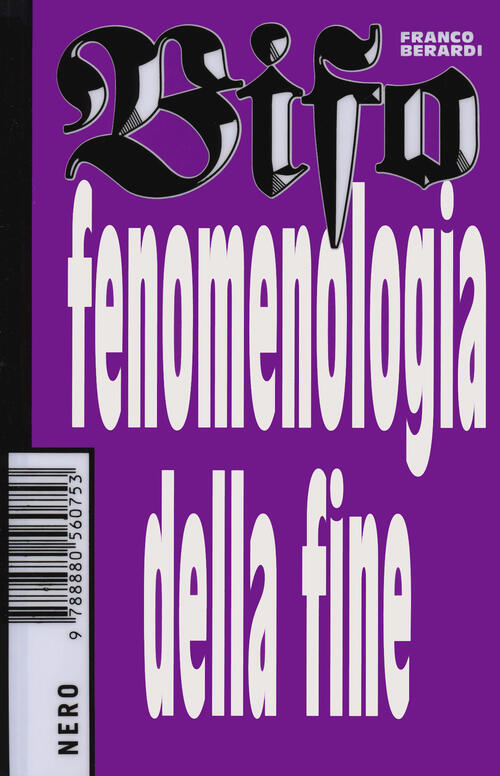
Franco Berardi: Fenomenolgia della fine
Roma: Nero 2020
247 pagina's
Uitgelezen: 8 september 2022
Failure is Not an Option
Ik kocht dit boek omdat ik de film Apollo 13 nog altijd indrukwekkend vind (ook al is die al uit 1995) en ik na het browsen van wat fragementen daarvan op youtube me ineens afvroeg of die flight controller wel eens iets geschreven had over zijn ervaringen tijdens die bijna mislukte vlucht. En hoewel er uiteindelijk maar twee (van de tweeëntwintig) hoofdstukken over Apollo 13 gaan, was dit zeker geen miskoop en heb ik het hele boek met veel plezier (en in vrij korte tijd) gelezen.
Het boek begint met de aankomst van Kranz bij Cape Canaveral op 2 november 1960, en zijn eerste werkzaamheden daar tijdens de zogenaamde Four Inch Flight. De VS lagen op het gebied van ruimtevaart op dit moment nog ver achter de Soviet Unie, die in 1957 al hun Sputnik hadden gelanceerd. Terwijl de VS druk bezig was met überhaupt een raket te bouwen die de lancering zou overleven, brachten de Soviets de eerste mens in een baan om de aarde. Hoewel deze strijd natuurlijk goed bekend is, is het wel fijn om iemand hierover te lezen die het aan den lijve heeft ondervonden.
Kranz vertelt het verhaal in een overzichtelijke chronologische volgorde, waarbij de hoofdstukken de mijlpalen van het ruimtevaartprogramma volgen – met titels die verwijzen naar (benamingen van) ruimtevaartuigen (Gemini the Twins of The Year of Apollo), belangrijke stappen in het hele programma (A Fire on the Pad), The Christmas Story), of opvallende gebeurtenissen binnen Mission Control zelf (The Brotherhood of SimSups Wins the Final Round). Binnen de hoofdstukken zijn dan paragrafen terug te vinden die eenvoudig een datum en dikwijls naam van een lancering dragen (bijvoorbeeld June 4, 1965, Gemini-Titan 4). Slechts één keer, in hoofdstuk 2, wijkt Kranz af van dit schema, wanneer hij zijn eigen autobiografie vóór zijn werk bij NASA beschrijft.
Hoewel het boek primair geschreven is vanuit een engineerings-perspectief, houdt Kranz toch zeker ook oog voor de menselijke factor. Niet alleen heeft hij het op gezette tijden over zijn eigen huiselijke situatie (hoewel toch onderbelicht blijft hoe zijn vrouw het heeft ervaren, met zes opgroeiende kinderen en een man die nooit thuis is, maar soit), hij beschrijft ook de interne machtstructuren en -conflicten, de verschillen tussen de Flight Controllers en de meer uitvoerende krachten (The Trench), of hoe het was om met veel NASA-personeel in dezelfde buurt te wonen (Flight Control Alley). Opvallend genoeg heeft hij het ook vaak over de 'afterparty' van een lancering, wanneer de controllers met z'n allen bier gaan drinken in de plaatselijke kroeg, of hoe het Mission Control Center blauw stond van de rook van sigaren en sigaretten (en een enkele pijp).
Kranz is geen begenadigd schrijver: zijn vocabulaire lijkt wat beperkt, de zinnen blinken niet uit in literaire complexiteit en hij wisselt af en toe wat tussen verleden tijd en tegenwoordige tijd. Maar het is niet zo dat het lezen je hierdoor tegen gaat staan: het verhaal is interessant genoeg. Dat geldt in mindere mate voor het gegeven dat Kranz zijn werk (of dat van de NASA in deze periode) wel erg historisch en belangrijk vindt. Hoe vaak we wel moeten lezen dat deze of gene persoon super hoge standaarden had, hoe ingewikkeld een lancering wel niet was, of hoe zeer je binnen seconden beslissingen moet maken...
Each day was a new discovery under his guidance. No work was insignificant, no job unimportant. The standards had to be the highest if you were to meet with his approval. (p.105)
The Apollo 7 flight plan was incredibly precise, breaking objectives down and literally keeping each minute and second chock-full of activity. The mission objectives are listed in a thick manual that spells out every detail of the required tests. (p.230)
To the split second, a burst of static marked the expected signal loss. The first humans to see the 'far side' of the Moon were now on their own. It would be thirty-two minutes until we saw the crew again and we would know the maneuver result. (p.243)
My third Saturn launch was routine, if launching the world's most powerful machine is ever routine. (p.365)
Maar goed, het was natuurlijk ook een spannende en indrukwekkende tijd.
Het werk gaat een beetje als een nachtkaars uit. Apollo 14 had ook problemen, maar niet zo erg als z'n voorganger. De laatste drie missies werden allengs minder spectaculair (hoewel in een elektrische auto op de maan rondrijden natuurlijk best spectaculair is) en ook Kranz' beschrijving ervan wordt allengs korter. Alleen de lancering van Apollo 17 krijgt nog een eigen hoofdstuk (van 12 pagina's, wat iets onder het gemiddelde van 15 is), omdat dit de laatste missie naar de maan is: "I noted in the log: At 188:01:35, the last man left the Moon" (p.378).
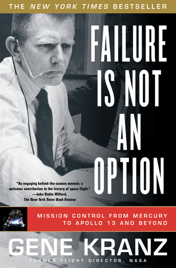
Gene Kranz: Failure is not an Option. Mission Control from Mercury to Apollo 13 and Beyond.
New York: Simon and Schuster Paperbacks
392 pagina's (plus 12 pagina's glossary en index)
Uitgelezen: 25 augustus 2022
Blijven is nergens
Soms wordt je door een artikel in de krant zomaar geattendeerd op een fijn boek. Dat was het geval met deze biografie van Rilke door filosoof en dichter Florian Jacobs. Dit is niet zomaar een biografie, maar tegelijkertijd een reisverslag, eulogie en tekstexegese in één.
Rilke was een onrustig en reislustig persoon, die afwisselend in steden als Praag, München, Berlijn, Parijs, Venetië of Duino verbleef. Nergens vond hij de rust die hij nodig had om tot zijn werk te komen, of als het werk eindelijk klaar was, moest er onmiddellijk gereist worden om tot nieuwe inzichten en ideeën te komen. Ook zijn huwelijk en dochter konden hem niet op één plaats vasthouden. Pas aan het eind van zijn werkzame leven vond hij een woontoren in Muzot, waar hij in minder dan drie weken de Elegieën van Duino en de Sonnetten aan Orpheus voltooide – een ongekende prestatie waar tien jaar van stilte aan vooraf was gegaan.
Jacobs volgt, in min of meer chronologische volgorde, de steden die Rilke tijdens zijn reizen aandeed. Hij bezoekt de café's die Rilke ook bezocht, wandelt door parken waar Rilke ook wandelde, en gaat op zoek naar de huizen waar Rilke woonde. Het boek wisselt op deze manier het hedendaagse af met het verleden, waardoor het geen saaie opsomming wordt van gebeurtenissen, maar eerder een continue zoektocht naar sporen van de grote dichter.
En een grote dichter was Rilke, volgens Jacobs. Dat blijkt wel uit het onwaarschijnlijke niveau van details wat hij over hem weet op te diepen, de bijna idolate beschrijvingen die hij geeft van de huizen, steden en tuinen waar Rilke verbleef, en het rabiate zoeken naar sporen die door of voor Rilke zijn achtergebleven. Volgens Jacobs is Rilke niet alleen een dichter, maar ook één van de grotere filosofen van de vorige eeuw.
Natuurlijk, het is een boek over Rilke en de waardering die uit Jacobs' werk spreekt wordt nooit vermoeiend of vervelend, maar met een paar kritische noten en vijftig pagina's minder zou het boek nog prettiger geweest zijn om te lezen. Zo gaat Jacobs bijvoorbeeld nauwelijks in op de gevolgen van de eerste wereldoorlog op Rilke's gedachtengoed, of vermijdt hij elke confrontatie met anders denkende denkende dichters zoals Ungaretti of d'Annunzio – die Rilke toch zeker gekend moet hebben, op z'n minst hun werk.
Want dat was het zeker: erg prettig om te lezen. Niet alleen door de opbouw en de stijl, maar ook door de grote hoeveelheid (fragmenten van) gedichten die er in wordt opgevoerd en toegelicht. Behalve geografisch wordt op deze manier Rilke's leven ook weergegeven aan de hand van zijn werken. Informatief, inspirerend, en verhelderend.
Een fijn boek, voorzien van gedichten maar ook foto's (van nu en van vroeger). En gelukkig ook voorzien van een uitgebreide literatuurlijst, notenapparaat en register.
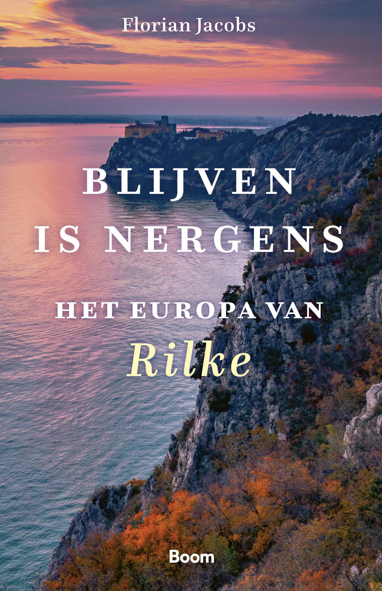
Florian Jacobs: Blijven is Nergens. Het Europa van Rilke
Amsterdam: Boom filosofie
368 pagina's (plus 24 pagina's noten en register)
Uitgelezen: 6 augustus 2022
Serotonine
Ik las Serotonine voor de tweede (of derde) keer, omdat ik zomaar zin had weer eens iets van Houellebecq te lezen. Het blijft een merkwaardig boek. We ontmoeten Florence-Claude (een naam die hij zelf haat, overigens) Labrouse, een vrij typische Houellebecqiaanse hoofdpersoon: hij kijkt het liefst de hele dag televisie, rijdt 160 kilometer per uur in zijn 4x4, en saboteert de rookmelder in elk hotel dat hij aandoet om stiekem te kunnen roken. Onze eerste kennismaking met hem is wanneer hij twee mooie jonge meisjes bij een tankstation ergens in Spanje vertelt hoe ze hun bandenspanning moeten checken – de blonde met de bandana en de hotpants keert als een soort leitmotiv telkens weer terug in het verhaal.
Tot zover niks nieuws. Opvallend is dat Labrouse een opvallend zachte en verwarrende kant blijkt te hebben. Wanneer hij zijn Japanse vriendin Yuzu in hun appartement aan haar lot heeft overgelaten en zijn intrek heeft genomen in een niet noemenswaardig hotel ergens anders in Parijs, begint hij uit te weiden over zijn verleden, herinneringen op te halen aan de liefdes die hij heeft gekend (jawel) en terug te blikken op zijn carrière bij het ministerie van landbouw. Gedreven door deze mijmeringen rijdt hij ook de plaatsen af waar het gebeurde – en probeert uiteindelijk zijn laatste grote liefde Camille terug te winnen door een aanslag op haar zoon, die hij als de grote blokkade identificeert, te beramen.
Primair gaat Serotonine over de liefde, de onmogelijkheid om die vast te houden en de eenzaamheid die daar het gevolg van is. Maar in de tussentijd wordt ook de ondergang van de Europese cultuur als gevolg van Amerikaans individualisme besproken – een ander geliefd thema van Houellebecq. En een aanzienlijk deel van het boek wordt ingeruimd voor een uitgebreide beschrijving van de gevolgen van de intensivering en globalisering van de landbouw en veeteelt: een onderwerp dat mogelijk is ingegeven door de opstand van de Gele Hesjes in 2015, maar in Nederland in 2022 opvallend actueel is:
[H]et probleem was dat die intensieve landbouw met zijn gigantische bedrijven en zijn maximalisering van het rendement per hectare, die landbouwindustrie met haar totale focus op de export, op de scheiding van landbouw en veeteelt, in mijn ogen volstrekt haaks stond op wat er nodig was om tot een aanvaardbare ontwikkeling te komen, we moesten juist op kwalitiet inzetten, lokaal consumeren en produceren, bodem en ondergrondse waterbekkens beschermen door terug te keren naar complexe wissebouw en gebruik van dierlijke mest. (p.92)
Houellebecq tapt als vanouds uit allerlei registers: hoogdravende filosofische overwegingen worden afgewisseld met ultraplatte seksuele scenes en uitgebreide reisbeschrijvingen. Door de opbouw van de roman en de hoeveelheid liefdes die de revue passeert is de chronologie soms wat onduidelijk (zelfs voor de verteller zelf, zoals wanneer hij zich afvraag hoe die annorexiapatiënt met het lijzaad ook al weer heette: 'de lezer kan het zelf aanvullen', p161).
Het is niet het beste boek van Houellebecq dat ik ooit gelezen heb (dat blijft toch elementaire deeltjes, denk ik), maar het is toch zeker de moeite waard. Het stemt misschien droevig, maar zeker ook tot nadenken en reflecteren.
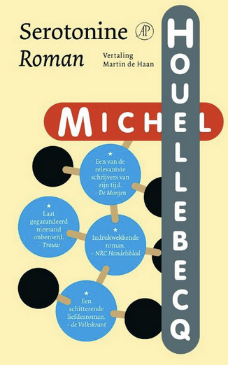
Michel Houellebecq: Serotonine.
Amsterdam: de Arbeiderspers (2020)
Oorsponkelijke titel: Sérotonine
Vertaald door Martin de Haan
303 pagina's
Uitgelezen: 12 juli 2022 (bis)
Kijken, Proeven, Denken
Dit boekje had ik al een tijdje in huis, maar ik was er nooit aan toegekomen om het te lezen. Half juni ging ik echter met vriend T een weekend fietsen (en rosé drinken) in Limburg, dus dit leek een uitgelezen moment om het werk mee te nemen. Thijs Lijster heb ik een paar keer ontmoet. Eén keer bij het afscheid van René Boomkens uit Groningen, en een keertje voor de promotie van een collega van me. Hij is als kunst- en cultuurdocent verbonden aan de universiteit van Groningen en de universiteit van Antwerpen.
Kijken, Proeven, Denken (de titel is ongetwijfeld een verwijzing naar Heideggers Bouwen, Wonen, Denken) bestaat uit zeventien essays, verdeeld over de thema's kijken, proeven en denken (je verwacht het niet). In elk essay staat kunstwerk of kunstenaar, een denker of gedachte, of een positie of een concept centraal. Vanuit deze kernen verkent Lijster verschillende hedendaagse fenomenen en problemen. Zo wordt het 'retrotopisch populisme' benaderd vanuit de tijd-werken van Maarten Baas (Tijd als Ervaring, pp.36-46), de hedendaagse drang naar individuele ontplooing toegelicht aan de hand van The Space Between van Marina Abramovic (Levenskunst als Handelswaar, pp.129-136), of de mogelijke emancipatoire rol van de kunsten geïllustreerd met het gedicht Ik is een Ander van Arthur Rimbaud (Ik is een Ander, pp.183-200).
De tekst getuigt van een zeer grote belezenheid, gedrevenheid en wijsheid. De grote diversiteit aan kunstwerken en kunstenaars wordt gecompleteerd met een keur aan denkers en schrijvers (de literatuurlijst beslaat vier pagina's). De meeste essays zijn voorzien van illustratie en kleurenfoto's, wat het lezen bijzonder aangenaam en informatief maakt.
Soms neigt Lijster een beetje naar kunstkritische endoscopie, bijvoorbeeld wanneer hij vier essays wijdt aan de rol van de kunstkritiek. Hoewel op zichzelf interessant, komt dit toch ook een beetje over als zelflegitimering.
Het boek nodigt zeker uit om zelf verder na te denken en de hierin besproken werken te verzamelen en, bijvoorbeeld, als onderwijsmateriaal in m'n caput selectum Art, Technology (and Philosophy) in te zetten. Het is wel weer jammer dat de uitgever besloten heeft geen index in het boekje op te nemen, waardoor het terugvinden van bepaalde zaken geen sinicure is. Ook is het erg jammer dat de vele interessante citaten die in het boekje staan niet zijn voorzien van een referentie – wat het terugvinden ervan zelfs nagenoeg onmogelijk maakt.
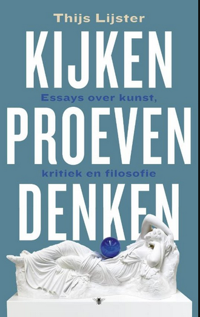
Thijs Lijster: Kijken, proeven, ruiken. Essays of kunst, kritiek en filosofie.
Amsterdam: de bezig bij (2019)
245 pagina's
Uitgelezen: 30 juni 2022
Slaughterhouse Five
Ik las Slaughterhouse Five een jaar of tien geleden voor het eerst en wilde het nu herlezen omdat een collega van me naar de theaterbewerking hiervan door Erik Whien was geweest.
Het was goed om het weer eens te herlezen, want ik was veel ervan vergeten. Natuurlijk niet de algemene teneur of het verhaal van Slachthuis Vijf, het heen en weer springen door de tijd, of het soort van inleidende eerste hoofdstuk; maar de details, de naam van de hoofdpersoon, dat hij een optometrist was die regelmatig door buitenaardse wezens (de Tralfamadorians) bezocht werd, of dat het boek eindigt met de vogel die Poo-tee-weet, dat was allemaal wat weggezonken.
De kern van het verhaal is natuurlijk het bombardement op Dresden en de gevolgen die dat heeft gehad voor de hoofdpersoon (Billy Pelgrim). De beschrijving van Dresden nadat hij en zijn mede-krijgsgevangenen de schuilkelders verlaten is indrukwekkend in zijn droogheid:
He was down in the meat locker on the night that Dresden was destroyed. There were sounds like giant footsteps above. The meat locker was a very safe shelter. [...] A guard would go to the head of the stairs every so often to see what it was like outside, then he would come down and whisper to the other guards. There was a fire-storm out there. Dresden was one big flame. The one flame ate everything orgamic, everything that would burn.
It wasn't safe to come out of the shelter until noon the next day. When the Americans and their guards did come out, the sky was black with smoke. The sun was an angry little pinhead. Dresden was like the moon now, nothing but minerals. The stones were hot. Everybody in the neighborhood was dead.
So it goes.
Slaughterhouse Five is een indrukwekkend boek. Niet alleen door dit verslag van het bombardement, maar ook omdat er zo met de chronologie wordt gespeeld en verschillende verhaallijnen door elkaar worden uitgewerkt. Het is een oorlogsroman, maar tegelijkertijd science-fiction, maatschappijkritische filosofie en humor. Het is van eenzelfde semi-autobiografische absurditeit als Catch 22 (dat zo'n acht jaar eerder verscheen). Het is vol van ironie en een bepaalde vorm van sentimentaliteit (die versterkt wordt door het continu herhalen van So it goes). Het is geschreven in simpele, korte zinnen, waardoor het geheel een soort urgentie krijgt.
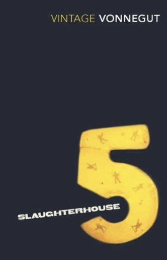
Kurt Vonnegut: Slaughterhouse Five
London: Vintage Books (2000)
First published in Great Britain in 1970 by Jonathan Cape
177 pagina's
Uitgelezen: 16 juni 2022 (bis)
Langs de afgrond
Ik las dit boek voor de tweede keer (de eerste was in januar 2021), maar vond dat ik er te weinig van had onthouden. Dit keer maakte ik ijverig notities in de marge en voorzag elk deel van een korte samenvatting. Hoewel de geschiedenis de gedachten die in dit boek besproken worden wellicht verdacht heeft gemaakt, is het toch immers op z'n minst waardevol om die gedachten in hun historische context te plaatsen; en verder zit er in veel van de hier besproken gedachten wel een heel waardevolle kern.
Het boek bevat drie delen: (1) Fin-de-Sciecle-Frankrijk, (2) De Conservatieve Revolutie en (3) De pen en het zwaard, met elk zo'n zes tot zeven hoofdstukken. In elk hoofdstuk staat het schrijven en denken van één persoon centraal, hoewel dat in sommige gevallen ook over twee hoofdstukken verdeeld wordt. Op deze manier passeert de verdachte ideeënhistorie van eind negentiende tot begin eenentwintigste eeuw de revue.
Van de besproken auteurs kende ik opvallend genoeg alleen een redelijk aantal uit de Conservatieve Revolutie – met name Spengler, Jünger en Schmitt. De auteurs uit het Frankrijk van het eind van de negentiende eeuw waren voor mij allemaal nieuw, terwijl bijvoorbeeld de term Socialisme Nationaliste blijkbaar daar en toen is gemunt (door Barrès, in 1898, in tegenstelling tot wat er op de verschillende wiki-pagina's bij dit lemma te lezen is). Misschien is mijn onbekendheid met deze Fransen wel te verklaren door het feit dat de besproken auteurs primair politici en literatoren waren, terwijl de Duitsers toch meer een wijsgerige agenda hadden.
Het boek is goed leesbaar, zeer informatief en bijzonder inspirerend. Heumaker slaagt erin om de ideeën en opvattingen onbevooroordeeld en zonder afkeuring over het voetlicht te brengen. Evenals in De Esthetische Revolutie heeft hij wel de neiging erg in details te blijven hangen, maar, in tegenstelling tot dat andere boek, is het hier niet vervelend en wordt het nergens langdradig. De diepgang, de eruditie en de interne verwijzingen geven het werk juist een volledigheid die het een goed studieboek zou kunnen maken (voor een module Inleiding in de Foute Gedachtenwereld, bijvoorbeeld).
Bijzonder verhelderend (en voor mij nieuw) was de invloed die Ernst Jünger op Heidegger, en dan met name op diens techniekfilosofie, heeft gehad. Zo wist ik niet dat Heidegger minstens twee maal een seminar over Jüngers Der Arbeiter heeft gegeven en dat hij hierin 'een werkelijk begrip voor de metafysica van Nietzsche' had aangetroffen.
Achteraf is ook vast te stellen dat Heidegger zich pas sinds 1932 met de vraag naar de techniek bezighield. Dat kon geen toeval zijn, aangezien Jünger in der Arbeiter de techniek aanwijst als de aard en wijze waarop de gestalte van de arbeider de wereld mobiliseert. (p.139)
Nu wil ik eigenlijk ook Jünger gaan lezen...
Het enige dat eigenlijk ontbreekt aan dit werk is een soort van samenvattend overzicht. Dat moet ik dus maar zelf gaan maken, in de vorm van presentaties of een website of iets dergelijks.
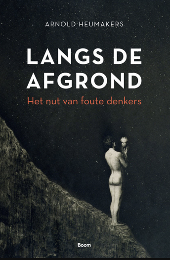
Arnold Heumakers: Langs de afgrond. Het nut van foute denkers.
Amsterdam: Boom (2020)
277 pagina's (daarna 42 pagina's met noten, literatuur en – gelukkig - een index)
Uitgelezen: 12 juni 2022 (bis, eerste keer was 19 januari 2021)
De mooiste van Ungaretti
Deze bundel had ik al een tijdje in m'n bezit en ik had er ook af en toe wel het één en ander uit gelezen. Doordat mijn broer bij zijn Italiaanse les een dictee van één van Ungaretti's gedichten als dictee had gekregen, kreeg ik evenwel hernieuwde interesse in deze Italiaanse dichter uit het begin van de vorige eeuw.
Ik meende dat Ungaretti een beetje in dezelfde hoek zat als d'Annunzio en Marinetti, maar daar kan ik zo snel geen bewijs van vinden. Wel dat hij op z'n minst bekend is geweest met het werk van d'Annunzio, maar verdere politieke ambities lijken aan hem niet besteed geweest te zijn (wat misschien ook verklaart waarom juist hij bij dat dictee naar voren werd gebracht).
Zoals hoort bij een poëziebundel had ik dit werkje gedurende de maanden april en mei in m'n tas zitten om telkens wanneer de gelegenheid zich voordeed een gedicht te lezen of te herlezen. Zo stond ik in overvolle bussen (lijn 6), in de rij voor de kassa bij de supermarkt of in de voorjaarszon tussen de lessen op Zernike in dit boekje te lezen. Tijdens het etentje (en aansluitend drankgelag) van de SE-docenten op 29 april droeg ik het onderstaande gedichtje voor:
Noia
Anche questa notta passerà
Queste solitudine in giro
titubante ombra dei filtri tranviari
sull'umido asfalto
Guardo le teste dei brumisti
nel mezzo sonno
tentennare
En opvallend genoeg was er tijdens een sessie (aan de picknicktafel op het dak bij Minerva) van de module Theory and Philosophy gelegenheid om het onderstaande gedicht voor te dragen (en live te vertalen in het Engels). De vraag was waarom er in de filosofie zoveel nadruk wordt gelegd op poëzie, en dit gedicht vertelt over het wereldscheppende aspect van juist deze kunstvorm:
Commiato
Gentile
Ettore Serra
poesia
è il mondo l'umanità
la propria vita
fioriti dalla parole
la limpida neraviglia
di un delirante fermento
Er staan nog veel meer fijne gedichten in deze bundel – en ook wel een aantal saaie. Hoe dan ook, heis is fijn om ook dit in je intellectuele bagage te hebben zitten.
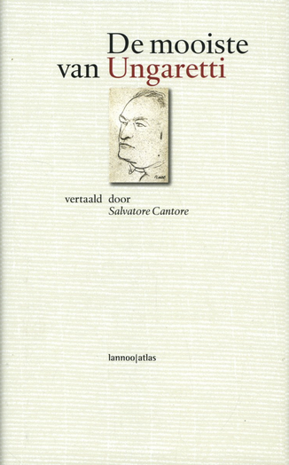
De mooiste van Giuseppe Ungaretti
Vertaald door Salvatore Cantore
In een redactie van Koen Stassijns en Ivo van Strijten
Ingeleid door dr. Dina Aristod:wemo (UvA)
Lannoo|Atlas 2002
Mussolini - de eerste fascist
Toch maar eens een biografie van Mussolini gelezen – met name nadat ik dat boekje over het fascisme had doorgewerkt en omdat ik (alweer een paar jaar terug) de prachtige 'roman' M, de zoon van de eeuw (Scurati, 2019) had gelezen. Opvallend genoeg is er, in ieder geval in mijn omgeving, weinig bekend over deze eerste fascist, terwijl hij toch aan de wieg heeft gestaan van één van de belangrijkste politieke bewegingen van de twintigste eeuw. Het fascisme was de eerste echt grote massabeweging en bijvoorbeeld Hitler was een groot bewonderaar van Mussolini. Wat je ook vindt van het fascisme en het daaruit voortkomende nationaalsocialisme, voor een goed begrip van de moderne tijd lijkt het me toch van belang dat je op z'n minst een basiskennis hebt van deze beide stromingen.
Het boek is, vanzelfsprekend, opgebouwd rondom de chronologie van de belangrijkste gebeurtenissen in het leven van Mussolini. Het begint met zijn jeugd in Predappio in de jaren negentig van de negentiende eeuw, en eindigt met zijn executie in Salò in april 1945. Er wordt uitgebreid gesproken over zijn opkomst binnen de Italiaanse Socialistische Partij (PSI), hoe hij dat niet kon omzetten in professioneel perspectief en waarom hij (dus) terugkeerde naar het platteland om opnieuw als redacteur voor een socialistische kranten (Avanti!, Il Popolo d'Italia) aan het werk te gaan. Ook zijn huwelijk met Rachele Guidi en zijn buitenechtelijke relaties (met name die met Margherita Sarfatti) komen aan bod.
Interessant is (natuurlijk) de rol die de Eerste Wereldoorlog in de opkomst van het fascisme heeft gespeeld. Al snel na augustus 1914 vormde zich in Italia radicale groepen die geen middel schuwden om Italië tot deelname aan de oorlog te dwingen. Mussolini positioneerde zich in de loop van 1915 aan het hoofd van deze zogenaamde Fasci d'Azione Rivolutionaria, oftewel I Fascisti. Samen met D'Annunzio, Marinetti en Corridani begon Il Duce (zoals hij al snel werd genoemd) aan 'een kruistocht voor de oorlog' (p.60). Vanuit deze positie begint zijn opmars als dictator, wanneer tijdens de vredesbesprekingen van Versaille in 1918 Italië er behoorlijk bekaaid afkomt.
Natuurlijk worden zijn rol als voorbeeld voor Hitler, zijn idee als profiteur van de As en zijn pogingen om koste wat het kost een trouwe bondgenoot voor Duitsland te blijken uit de doeken gedaan. Hierbij wordt goed de politieke chaos van Italië en de meer geopolitieke ontwikkelingen in de jaren dertig en veertig in de gaten gehouden. De manier waarop hij het dictatorschap vormgeeft, de toenemende problemen die hij ervaart en introduceert, en de uiteindelijke (en onvermijdelijke) val in 1944 komen uitgebreid aan bod.
Een zeer lezenswaardig boekje, voorzien van interessante foto's en een uitgebreide literatuurlijst en een index (hoewel die niet zo heel uitgebreid of zelfs maar correct is – bij 'Hitler' staat bijvoorbeeld 'passim', terwijl de eerste keer dat diens naam voorkomt pas op pagina 140 is). Wat ik (ook hier) wel node mis is een kort schematisch overzicht van de belangrijkste gebeurtenissen – dat moet ik dan ooit zelf maar eens maken.
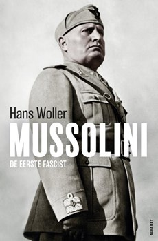
Hans Wolters: Mussolini, de eerste fascist.
Amsterdam: ALFABET uitgevers
Oorsponkelijke titel: Mussolini, der erste Faschist
Vertaald door Gerrit Bussink en Izaak Hilhorst
326 pagina's (plus nog 54 pagina's aanhangsel)
Uitgelezen: 29 mei 2022
Grenzen van de gemeenschap
Helmut Plessner kende ik eigenlijk voornamelijk door zijn drie 'anthropologische grondwetten' (antropologische Grundgesetze), die ik in mijn onderwijs met regelmaat aanhaal. En die grondwetten kende ik dan ook weer niet van Plessner zelf, maar alleen door de bespreking daarvan door Jos de Mul – van Plessner zelf had ik nog nooit iets gelezen. Wat op zich vreemd is, omdat hij toch opereert op het terrein waar ik zelf ook interesse in heb, én hij heeft een tijdje als hoogleraar aan de RuG gewerkt – dus ook nog dicht bij huis.
Toen ik las dat er een vertaling zou komen van zijn Grenzen der Gemeinschaft (1924), schafte ik me deze dan ook direct aan. Het waren toch de koude en donkere dagen voor kerst, en we zouden binnenkort twee weken onderwijsvrij hebben, dus genoeg gelegenheid om te lezen.
Centraal in het werk van Plessner staat de vraag wat het betekent om mens te zijn – in die zin is hij de grondlegger van de wijsgerige antropologie. In Grenzen van de gemeenschap gaat hij in tegen de nationalistische en de communistische bewegingen die in die tijd opkwamen. Wat deze groeperingen gemeen hebben, is een afkeer van de moderne burgermaatschappij, waarin relaties vooral functioneel zijn en mensen rollen moeten spelen. Zij zien juist een grote meerwaarde in de gemeenschapszin, waarin mensen in een betekenisvolle relatie tot elkaar staan.
Plessner neemt het juist op voor de burgermaatschappij. Er is volgens hem niks mis met het spelen van een rol: een rol biedt kansen, maar beschermt je ook omdat dit de mogelijkheid biedt om je niet helemaal bloot te geven.
Grenzen van de Gemeenschap is geen boek waarin je 's avonds in bed nog even een paar pagina's leest. Het vereist de nodige aandacht en concentratie, en het helpt ook behoorlijk wanneer je enigszins in het domein bent ingevoerd. Plessner heeft een fraaie stijl, maar ook wel de neiging wat te meanderen waardoor je soms de weg wat kwijt raakt. Het is daarom moeilijk om de rode draad van het betoog goed vast te houden. Wat bijvoorbeeld (één van vele) te denken van het volgende:
De stemming, de pijn, de liefde, het echte gevoel, de onechte vreugde, ze laten zich begrijpen, maar eenmaal begrepen vloeien ze weg onder de greep waarin de waarneming ze wil vatten, zoals we wakker worden wanneer we dromen dat we dromen. [De psyche] is worden en zijn in één, omdat ze tegelijk het ontstaan van beiden is. (p.124).
Wat heel erg fijn aan deze uitgave is, is het uitgebreide notenapparaat van de vertaler: Jan Vorstenbosch. Niet alleen geeft hij in deze noten regelmatig een korte samenvatting van het punt dat Plessner eigenlijk wil maken, hij positioneert hierin het werk ook binnen de huidige context en samenleving. Goed beschouwd vormt het totaal van deze noten een uitgebreid essay over de relevantie van Grenzen aan de Gemeenschap in de hedendaagse (politieke) constellatie. Op deze manier krijg je dus eigenlijk twee boeken voor de prijs van één.
Wat – opnieuw – jammer is, is dat de uitgever ervoor heeft gekozen geen uitgebreid register van zaken op te nemen. Wel is er een sumiere index van de meest belangrijke personen, voorzien van een korte biografische notitie.
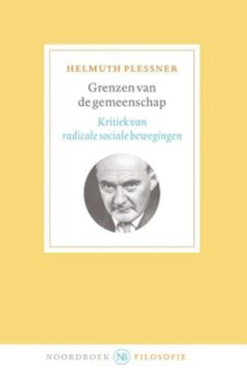
Helmut Plessner: Grenzen van de Gemeenschap
Amsterdam: Uitgeverij Noordboek
Oorsponkelijke titel: Grenzen der Gemeinschaft
Vertaald en geannoteerd door Jan Vorstenbosch
240 pagina's
Uitgelezen: 12 maart 2022
Elementaire deeltjes - fascisme
In het kader van een korte inleiding heb ik dit kleine boekje, geschreven door Daniël Knegt gelezen. Het boekje biedt een breed overzicht van de opkomst van het fascisme aan het begin van de vorige eeuw, de invloed van het fascisme op het nationaalsocialisme, en de sociaal-economische denkbeelden die hieraan ten grondslag lagen. Het biedt tevens inzicht in de situatie van na 1945 en de huidige invloeden die het fascistische denkbeeld nog steeds op de samenleving heeft (en in toenemende mate).
Knegt vermijdt de valkuil van het beschrijven van de geschiedenis; daarentegen geeft hij juist een redelijk objectief en wetenschappelijk overzicht van het geheel van deze politieke stroming. Door het formaat en de doelstelling is het onvermijdelijk dat hij hierbij details en nuances weglaat, maar dat is op geen enkel moment irritant of zelfs maar opvallend.
Een zeer leesbaar en informatief boekje. Het is alleen wel jammer dat de uitgever van deze serie heeft besloten om de literatuurlijst per hoofdstuk te noteren en geen index op te nemen – dat laatste heb ik zelf dus maar gedaan.
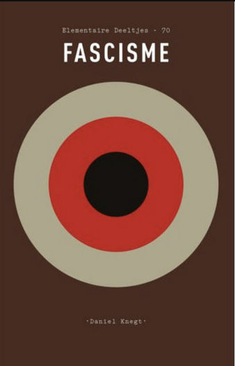
Daniël Knegt – Fascisme
Amsterdam: Athenaeum – Polak & Van Gennep
In de serie Elementaire Deeltjes (deel 77)
154 pagina's
Uitgelezen: 24 februari
Theopoëzie
Altijd een genot om een werk van Sloterdijk te lezen. Niet alleen door de prikkelende gedachten en verregaande inzichten die er in de regel in beschreven zijn, maar ook louter door het taalgebruik. En dit, zijn meest recente werk, vormt hierop geen uitzondering.
Hoewel het onderwerp van het boek moeilijk in één zin valt samen te vatten, denk ik dat het hem er met name om te doen is te onderzoeken in hoeverre religies en godsbeelden talige en poëtische constructies zijn. Goden, zo stelt hij op pagina 19, zijn 'vaagheden die door de cultus worden gepreciseerd'. Het institutionaliseren van cultus en de daarbijhorende gedragingen veroorzaakt een soort van calcificatie van het vage, wat door Sloterdijk als goddelijkheid (en, later, als religie) wordt beschouwd.
Hij vergeet hierbij niet de link tussen het goddelijke, de maatschappij en het individu op de korrel te nemen. In hoeverre veroorzaakt religie een verbondenheid in de verticale lijn (met het hogere) enerzijds en de horizontale lijn (onze gelijken) anderzijds. Cultussen, zo stelt hij op pagina 70, integreren hun leden in een alcompetente symbolische behuizing. De betrokkenheid op het hogere en op elkaar (het nabuurschap) noemt hij een 'symbolische domesticatie' die door de bondgenootschappen tot stand komt (pagina 64).
Al met al een zeer interessant en gedachten opwekkend werk, dat helaas minder transparant is dan het zou kunnen zijn. Het is onderverdeeld in twee delen (Deus ex Machina en Onder Hoge Hemelen), maar het is mij niet geheel duidelijk waar deze dichotomie vandaan komt. Sloterdijk heeft er altijd wel een handje van om veel neologismen te munten en met adjectieven te strooien, maar in Theopoëzie gaat hij hierin wel heel ver. Het wordt niet per se onleesbaar, maar behalve dat het bij tijd en wijle erg technisch is, is het sowieso wel een uitdaging om de rode draad de hele tijd vast te houden.
Het verbaast me verder dat hij in de hele tekst niet refereert aan Walter Benjamin, hoewel die laatste met zijn Über Sprache überhaupt und über die Sprache des Menschen toch een heel fundamenteel onderzoek heeft opgeleverd naar de vraag in hoeverre taal construerend is voor onze perceptie. Sloterdijk is ongetwijfeld bekend met dit werk, dus het moet een bewuste omissie zijn. Hetzelfde geldt in iets mindere mate voor het werk Le Contrat Naturel van Michel Serres, dat eveneens door Sloterdijk wordt genegeerd.
Desalniettemin is Theopoëzie een zeer lezenswaardig, informatief en prikkelend werk dat mij weer nieuwe inzichten en ideeën heeft verschaft die ik kan inzetten in mijn eigen onderzoek naar de verhouding tussen kunst en techniek. Het is wel een misser van de uitgever dat er geen uitgebreide literatuurlijst in de uitgave is opgenomen, en dat er een index ontbreekt. Om dat laatste leed enigszins te verzachten heb ik tijdens het lezen zelf maar een index opgesteld.
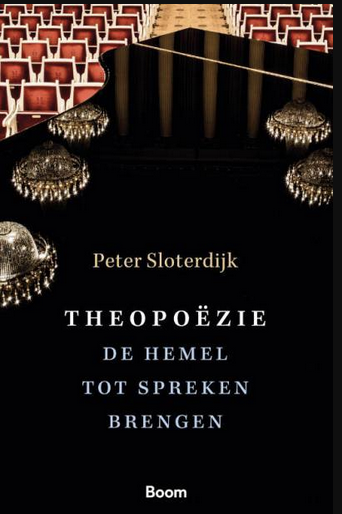
Peter Sloterdijk: Theopoëzie. De hemel tot spreken brengen.
Amsterdam: Boom
Oorsponkelijke titel: Den Himmel zum Spechen bringen. Über Theopoesie.
Vertaal door Mark Wildshut (wie anders?)
294 pagina's, plus 25 pagina's noten.
Uitgelezen: 4 januari 2022